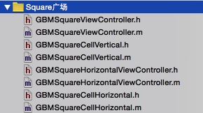

项目需要做出如下效果：在一个tableview的每个cell中实现横向滚动，展示各个不同地点所对应的图片资料。

这个效果其实不新鲜，网上应该是有不少第三方或现成的方法的。只不过刚好时间，作为新手的我还是尝试自己的思路吧。
思路一 — 在一个正常的tableview的每一个cell里嵌入另一个tableview
首先，创建了四个类 SquareViewController、CellVertical以及HorizontalTableViewController、CellHorizontal，分别是竖的tableview以及它的自定义cell，装载了地址icon和地址；横的tableview以及它的自定义cell，装载了图片和图片配文。

如何创建一个横向tableview
- 第一步 — 把
HorizontalTableViewController逆时针旋转90度
self.tableView = [[UITableView alloc] initWithFrame:CGRectMake(0, 0, 120, 60*12) style:UITableViewStylePlain];
//这句话的作用是把 HorizontalTableViewController 逆时针旋转90度
self.tableView.transform = CGAffineTransformMakeRotation(-M_PI/2);
self.tableView.delegate = self;
self.tableView.dataSource = self;
//注意这一句不可缺，不然横向tableview就会错位。这个center的坐标应该是上面tableview的frame的相反的一半。
self.tableView.center = CGPointMake(360, 60);
self.tableView.showsVerticalScrollIndicator = NO;
[self.view addSubview:self.tableView];
- 第二步 — 把
HorizontalTableViewController里的cell顺时针旋转90度
- (UITableViewCell *)tableView:(UITableView *)tableView cellForRowAtIndexPath:(NSIndexPath *)indexPath{
static NSString *cellID = @"cell";
GBMSquareCellHorizontal *cell = [tableView dequeueReusableCellWithIdentifier:cellID];
if (!cell) {
cell = [[GBMSquareCellHorizontal alloc] initWithStyle:UITableViewCellStyleDefault reuseIdentifier:cellID];
}
//把cell顺时针旋转90度
cell.contentView.transform = CGAffineTransformMakeRotation(M_PI/2);
return cell;
}
想象中这是很简单的，把四个类都设置好，然后在CellVertical里实例化HorizontalTableViewController就行了。但是实际运行时程序崩溃了，出现了以下报错。
[UIImageView tableView:numberOfRowsInSection:]: unrecognized selector sent to instance 0x7f9933cbd870
这是指该tableview的对象被释放了。通过各种排查，发现HorizontalTableViewController的所有代理方法都没有被执行，估计是和SquareViewController有冲突。
思路二 — 用scrollview来实现横向滑动
据说这才是外界比较普遍的做法，用scrollview + 仿tableview复用的形式。
待续…